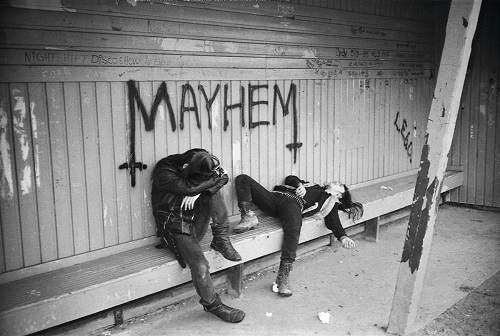

El black metal noruego no fue simplemente un género musical: fue una revolución cultural que surgió de las sombras a finales de los años 80 y explotó en los 90 con una intensidad pocas veces vista en la música extrema.
Noruega se convirtió en el epicentro de una nueva forma de expresión: cruda, anticomercial y profundamente nihilista.Bandas como Burzum, Darkthrone y Mayhem no solo rompieron las reglas musicales, sino que construyeron un universo sonoro helado, áspero y lleno de odio.
Esta escena se caracterizó por su rechazo total al cristianismo, su estética oscura y un mensaje de aislamiento y misantropía. Algunas bandas llevaron su ideología más allá de la música, desatando actos de violencia como la quema de iglesias o incluso asesinatos dentro del propio círculo black metal.
A pesar (o tal vez por causa) de esta controversia, el black metal noruego dejó una huella imborrable en la historia del metal. Su influencia se siente en miles de bandas actuales, desde lo más underground hasta grandes festivales.
Aquí exploramos las raíces, los discos y las figuras clave de este movimiento que nació del frío y el fuego.
